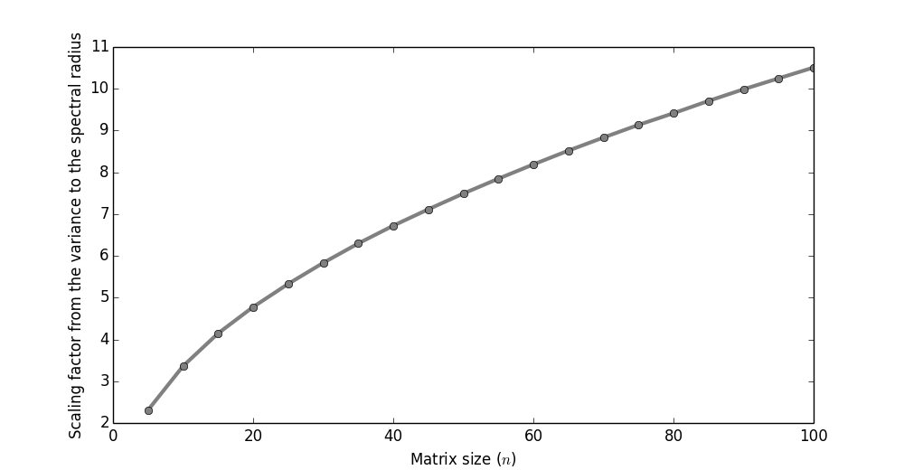
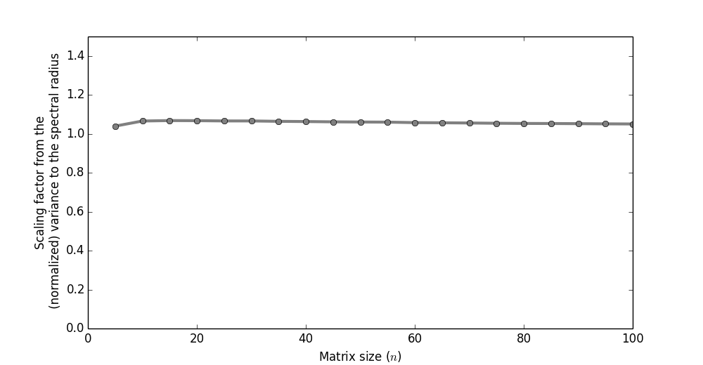

On the spectral radius of weight matrices in RNNs
When initializing the weight matrix (let's assume there is only one)
in an RNN (recurrent neural network) it is said (e.g. by Ilya Sutskever
in his PhD thesis) that you want the spectral radius (the size
of the largest eigenvalue in absolute value) to be slightly less
than $1$.
A common way to initialize the weight matrix is,
and then play with the variance until it works.
In this post we'll do a bit of exploratory mathematics
to prod the how the variance and size of a matrix, $W$,
affects its spectral radius $\rho(W)$.
The distribution of the spectral radius
Since the spectral radius is somewhat difficult to
work with theoretically, we'll take an experimental approach
instead.
Let $W_{n,v}$ be the random matrix of size $n$ with
(zero mean) gaussian entries with variance $v$.
The spectral radius is a random variable of these entries.
How does the distribution of the spectral radius
look for, say, $W_{10,2}$? Sampling
a set of $10,000$ matrices from this distibution
shows the result.
It looks somewhat Poisson distributed.
We could stop here, conjecture that it indeed is, and
then try to prove it, but let's move on.
Fixing the matrix size
Typically when training RNNs the number of hidden units
is first decided upon, and then you go about mucking with the variance.
Below I've fixed the matrix size to $10$. I then
changed the variance between $0.1$ and $10$, and looked at
the expected spectral radius (since all
we really care about is that $E\{ \rho(W)\} \approx 1$).
It looks linear! That's nice.
The coefficient here is about $3$.
Thus, for the case of $n=10$, we know
that if our variance is, say, $v=0.1$,
then the spectral radius will be about $\rho(W_{10,0.1}) = 0.3$.
Varying the matrix size
What if we train the network, and then decide
that we'd really like more hidden units?
Can we be sure that the spectral radius
will stay the same (assuming we don't change the variance)?

Above I'm varying the size of the matrix,
while looking at the proportion between the
expected spectral radius and variance in the
entries. It's not constant!
In other words, be aware that when increasing
the size of a matrix then its spectral radius will
also increase.
Conclusion
The conclusion of this post is basically
just that if you have something like this in your code,
then you should be aware that if you change the size
of the matrix, then you'll also have to change
the variance.
Fixing it
How could we go about fixing this?
Preferably we'd like a theoretically motivated
expression between the variance, size of the matrix,
and spectral radius, so that we can
ensure the radius is size-invariant
(by automatically changing the variance).
Doing it theoretically is a theorem
for another day. But one
ad hoc method often suggested
is the following.
(There are theoretical arguments,
but I've never seen one from the perspective
of trying to keep the spectral radius fixed.)
Amazingly, when we calculate the proportion
between the expected spectral radius and the variance,
as a function of the matrix size (using the normalization
trick above), it's almost always at $\sim 1$.

The conclusion is that when you
want the spectral radius to remain
fixed; just use the above instead.